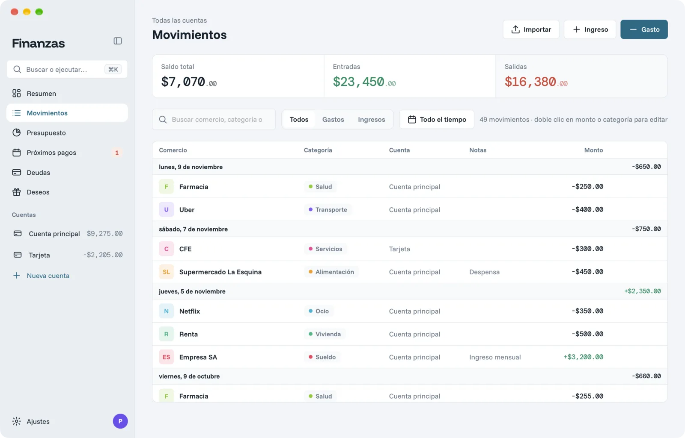

Pega un prompt. Tu agente construye una app como Finanzas.
Siete skills que le enseñan a Claude Code, OpenCode o Codex el diseño, la UX y la arquitectura de Finanzas. Tu agente te entrevista, arma el plan y lo avanza fase por fase hasta que tu app quede al mismo nivel.
Hechas por mí (@Leoglez10) y mi bestie Claude (él hizo casi todo jaja)
Cómo funciona
Abre tu agente en la carpeta vacía del proyecto nuevo y sigue tres pasos.
- 1
Pega el prompt
El agente instala las 7 skills y lee el inventario de todo lo que tiene Finanzas.
- 2
Contesta la entrevista
Una pregunta a la vez: qué hace tu app, sus pantallas y su acción principal. Con eso arma el mapa de paridad y el plan.
- 3
Avanza fase por fase
Un commit por tarea, cada uno verificado con tests, QA y capturas en claro y oscuro, hasta completar la paridad.
Quiero crear una app de escritorio nueva con el mismo diseño, UX y funcionamiento que Finanzas, usando el paquete de skills de Leoglez10/agent-skills.
1. Instala las skills del paquete:
npx skills add Leoglez10/agent-skills --skill app-escritorio-blueprint diseno-sin-slop ux-shell-escritorio registro-comandos tauri-escritorio mcp-para-app qa-visual-loop -y
Si npx no está disponible, clona https://github.com/Leoglez10/agent-skills y copia esas 7 carpetas completas a tu directorio de skills.
2. Si no ves las skills en esta sesión, lee los SKILL.md directamente desde donde se instalaron. Empieza por app-escritorio-blueprint y su references/inventario-finanzas.md.
3. Hazme la entrevista corta de esa skill, una pregunta a la vez, y espera mis respuestas.
4. Arma el mapa de paridad (pieza de Finanzas → pieza de mi app) y el plan por fases en odd/tasks/[nombre-de-la-app].md.
5. Avanza fase por fase cargando la skill que indica cada una. Un commit por tarea, con su verificación (tests, QA en PASS o capturas).
6. Desde la fase 3, corre el ciclo de qa-visual-loop en cada cambio visual y repite hasta que la tabla de paridad esté completa.
7. No hagas push ni abras PR sin preguntarme.
Mi app: [qué hace, para quién y sus pantallas principales]Cambia la última línea por la descripción de tu app.
El paquete de apps de escritorio
Juntas las ordena app-escritorio-blueprint. Cada una también funciona sola: copia su comando.

| Skill | Qué hace | Instalar solo esta |
|---|---|---|
| app-escritorio-blueprintv1.0 | La entrada. Mapea todo lo que tiene Finanzas a tu app nueva y arma el plan por fases que usa las demás. | npx skills add Leoglez10/agent-skills --skill app-escritorio-blueprint |
| diseno-sin-slopv1.0 | Tokens, DESIGN.md, lista de prohibidos y auditoría para que tu app no parezca hecha por IA. |
npx skills add Leoglez10/agent-skills --skill diseno-sin-slop |
| ux-shell-escritoriov1.0 | Sidebar plegable, Ajustes por pestañas, diálogos nativos y deshacer desde el toast en vez de “¿estás seguro?”. | npx skills add Leoglez10/agent-skills --skill ux-shell-escritorio |
| registro-comandosv1.0 | Un solo registro para el menú nativo, la paleta ⌘K y la tabla de atajos, con Ctrl en Windows y Linux. | npx skills add Leoglez10/agent-skills --skill registro-comandos |
| tauri-escritoriov1.0 | Ventanas, icono en la barra de menús, captura rápida con atajo global, avisos y actualizaciones firmadas. | npx skills add Leoglez10/agent-skills --skill tauri-escritorio |
| mcp-para-appv1.0 | Servidor MCP en Rust que comparte el núcleo de tu app, para que tus agentes lean y operen sus datos. | npx skills add Leoglez10/agent-skills --skill mcp-para-app |
| qa-visual-loopv1.0 | Maneja la app real con scripts PASS/FAIL y captura cada pantalla en claro y oscuro hasta la paridad. | npx skills add Leoglez10/agent-skills --skill qa-visual-loop |
Otras skills
Para documentar y presentar cualquier repositorio.
| Skill | Qué hace | Instalar |
|---|---|---|
| readme-completov2.4 | Inspecciona el repositorio real y crea o actualiza un README.md verificable; nunca inventa comandos ni licencias. |
npx skills add Leoglez10/agent-skills --skill readme-completo |
| repo-presentacionv1.0 | Audita cómo se ve el repo en GitHub (About, topics, social preview, releases) y entrega comandos gh listos. |
npx skills add Leoglez10/agent-skills --skill repo-presentacion |
Instalación
Sirve con cualquier agente que lea skills por carpeta (carpeta/SKILL.md). No hay build ni dependencias.
Con npx
Instala todo y elige tus agentes. Agrega --list para ver las skills sin instalar nada.
npx skills add Leoglez10/agent-skillsA mano
Copia la carpeta completa de la skill, con sus references/ y assets/.
git clone https://github.com/Leoglez10/agent-skills.git
cp -r agent-skills/diseno-sin-slop ~/.claude/skills/| Agente | Carpeta |
|---|---|
| Claude Code | ~/.claude/skills/ |
| OpenCode | ~/.config/opencode/skills/ |
| Otros | ~/.agents/skills/ |
Preguntas
¿Mi agente copia Finanzas tal cual?
No. Copia la estructura y el criterio (sidebar, ajustes, comandos, diseño, ciclo de QA), no el nombre, la marca ni los datos. Cada pieza se traduce a tu dominio o se descarta con un motivo escrito.
Instalé las skills y el agente no las ve
Los agentes cargan las skills al iniciar la sesión. En esa misma sesión el agente las lee como archivos (el prompt ya se lo pide); en la siguiente se activan solas.
¿Tengo que usar Tauri?
Es el stack por defecto (Tauri 2 + Svelte + Rust). Con otro stack siguen sirviendo el diseño, la UX, el registro de comandos y el ciclo de QA; el agente adapta el resto.
¿Las capturas funcionan en Windows y Linux?
Los scripts de QA que dan PASS o FAIL funcionan igual. La captura automática de pantallas usa screencapture, que solo existe en macOS; en otros sistemas se captura con la herramienta del SO.